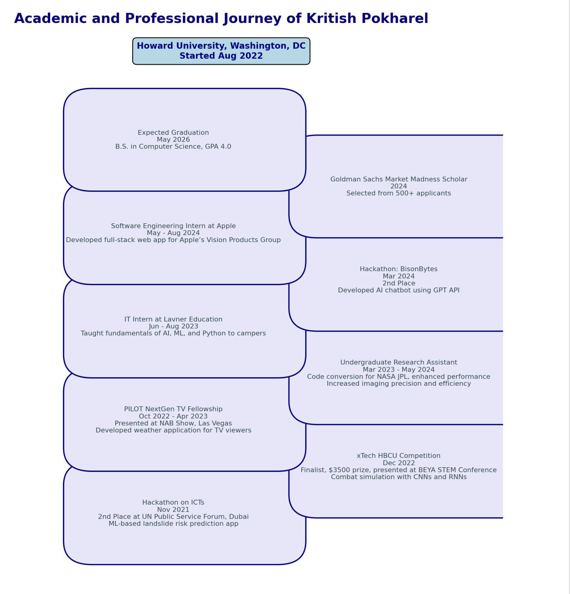

Reflective Introduction
Welcome to my Technical Writing Portfolio, a collection that showcases my journey as a writer, student, and aspiring software engineer. My name is Kritish Pokharel, and I am currently pursuing a Bachelor’s degree in Computer Science at Howard University. Throughout my academic and professional experiences, I have developed a strong technical foundation in software development, cloud computing, and data science. However, this course on technical writing has shown me that technical expertise alone is not enough; effective communication is just as vital for translating complex ideas into impactful solutions.
As a student and a developing professional, I initially viewed technical writing as a rigid form of communication, primarily focused on presenting information as concisely as possible. However, this course has broadened my perspective on how technical writing functions in my field and beyond. I have come to understand that technical writing is not merely about conveying information but about crafting messages that can educate, inspire, and connect with diverse audiences. Each piece of work in this portfolio reflects my evolving understanding of technical writing as a dynamic, strategic tool for bridging gaps between technical complexity and human understanding.
This portfolio includes various elements that highlight my growth as a technical writer and my commitment to professional development. My resume and responses to common interview questions offer a glimpse into my professional background, skills, and aspirations. These documents were crafted with an emphasis on clarity and precision, tailored to present my achievements and experiences in a way that resonates with prospective employers. Through these exercises, I learned the importance of structuring information effectively and using language that balances technical detail with accessibility.
Additionally, the Goals Statement and “Important People in My Field” sections allowed me to explore my motivations, aspirations, and inspirations. Writing these pieces helped me reflect on my long-term goals and the qualities I admire in leaders within my field. It reinforced the idea that technical writing is not just about the present but also about envisioning and articulating the future I want to build. These reflections have provided me with a stronger sense of direction and have deepened my awareness of the role technical writing can play in shaping my professional identity.
One of the most enlightening aspects of this course has been understanding the collaborative potential of technical writing. Whether working on projects or preparing instructional materials, I now see technical writing as a critical skill for fostering effective teamwork. The skills I’ve gained in organizing, structuring, and simplifying complex information are invaluable, especially in environments where clear communication can significantly enhance productivity and innovation.
This portfolio, therefore, is more than just a collection of assignments—it is a testament to my growth as a communicator and a professional. As I move forward in my career, I am confident that the skills and insights gained from this course will enable me to contribute meaningfully to any team and to communicate complex ideas with clarity, empathy, and purpose. I look forward to building on these skills and using technical writing to bridge knowledge gaps, create impactful solutions, and connect with a broader audience in the tech industry.
Job Application Package
Resume
Goals Statement
As a Computer Science student at Howard University with a passion for software engineering, my professional goals are focused on leveraging technology to make a meaningful impact on both businesses and communities. My short-term goal is to gain extensive hands-on experience in software engineering through internships and research opportunities. By immersing myself in practical, challenging environments, I aim to build a robust foundation in areas such as cloud computing, artificial intelligence, and data science. Through these experiences, I hope to refine my technical skills, develop my problem-solving abilities, and understand the nuances of working within high-performing teams.
In the long term, I envision myself in a role that allows me to lead innovative projects, particularly in fields where technology can drive significant improvements in accessibility and efficiency. My ultimate aspiration is to serve as a bridge between advanced technology and real-world applications, making complex solutions accessible to a broader audience. I am especially drawn to companies that prioritize ethical AI, data security, and inclusive technology, as I believe these principles are crucial to creating technology that truly benefits society.
One of the core values driving my goals is the commitment to lifelong learning. In the rapidly evolving field of technology, I understand the importance of staying curious, adaptable, and open to new challenges. This is why I am dedicated to continually updating my skill set, whether through formal education, certifications, or self-directed learning. I also aim to share my knowledge and experiences with others, particularly those from underrepresented communities, to help broaden the diversity of perspectives in technology. I believe that the tech industry thrives when it draws on a rich variety of voices and ideas.
In addition to my technical aspirations, I am also committed to fostering a positive, inclusive work culture. Having been part of various teams throughout my internships and university projects, I have come to appreciate the importance of collaboration, empathy, and respect in achieving team goals. My goal is to contribute to an environment where team members feel valued, supported, and motivated to bring their best ideas forward. I hope to one day mentor others, guiding new talent as they embark on their journeys in technology and sharing the lessons I’ve learned along the way.
Professionally, I am eager to work in a dynamic environment where innovation and growth are valued, ideally at a forward-thinking company working and creating innovations in the field of AI. These companies inspire me not only because of their technological advancements but also due to their commitment to social responsibility and creating products that have a positive global impact. I aim to contribute to projects that utilize cutting-edge technology, such as artificial intelligence or machine learning, to solve complex, real-world problems.
Overall, my goal is to build a career that is not only personally fulfilling but also socially impactful. I am committed to continuous improvement, both as a professional and as a member of society, and I look forward to the challenges and opportunities that lie ahead as I work to turn these goals into reality.
Important People in the Field
Satya Nadella – CEO, Microsoft
Satya Nadella transformed Microsoft by prioritizing cloud computing, AI, and digital transformation. His focus on empathy-driven leadership and accessible innovation inspires me to pursue a career where technical advancements are paired with social responsibility. His work underscores the importance of inclusive technology that empowers diverse communities.
Fei-Fei Li – Co-Director, Stanford Human-Centered AI Institute
A leader in AI, especially in computer vision, Fei-Fei Li co-founded the Stanford Human-Centered AI Institute, advocating for ethical, human-focused AI. Her commitment to AI that serves humanity aligns with my desire to apply technology responsibly and inclusively, particularly in fields like cloud computing and machine learning.
Jeff Dean – Senior Fellow, Google
As a prominent figure in AI and deep learning, Jeff Dean’s work has advanced neural networks and open-source contributions, making AI accessible to a global community. His technical expertise and commitment to sharing knowledge inspire me to approach software engineering with an open, collaborative mindset.
Andrew Ng – Co-founder, Coursera & Google Brain
Andrew Ng’s work in AI and online education through Coursera has helped democratize learning in advanced technology fields. His mission to bridge the knowledge gap in AI resonates with my passion for mentorship and outreach, inspiring me to use my skills to empower others in technology.
Timnit Gebru – Co-founder, Black in AI
A leading advocate for ethical AI, Timnit Gebru co-founded Black in AI to promote diversity in AI research. Her work underscores the importance of representation and ethics, reminding me that technology should reflect and respect the diversity of its users. Her dedication inspires me to advocate for inclusivity and ethical standards in my own career.
Work/Project Experience(Technical)
Internships
Software Engineering Intern – Apple Inc. (2024)
Developed a full-stack web application using Plotly Dash and Flask, deployed on Kubernetes. Contributed to AR/VR projects, gaining hands-on experience in immersive technologies.
Undergraduate Research Assistant – Howard University (2022 - 2024)
Collaborated with NASA JPL, optimizing a codebase for improved performance and reliability. Focused on translating complex research findings into practical solutions.
IT Intern – Lavner Education (2023)
Taught Python, AI, and ML fundamentals, helping students understand key concepts in technology. Focused on simplifying technical content for better learning outcomes.
Projects
BisonBytes Hackathon – 2nd Place (2024)
Created an AI chatbot using Azure and OpenAI's GPT, enhancing user interactions with intelligent responses.
PILOT NextGen TV Fellowship (2022 - 2023)
Developed a weather application presented at the NAB Show, showcasing skills in app development and real-time data integration.
xTech HBCU Student Competition – Two-time Finalist (2022 - 2023)
Proposed a combat simulation project using CNNs and RNNs, focusing on AI-driven real-world applications in defense technology.
ICTs Hackathon – 2nd Place (2021)
Built a machine learning-based app to predict landslide risks, showcasing skills in data analysis and risk management.
For detailed project samples and code, view my GitHub profile: GitHub
Visual Representation of Academic and Professional Journey
What Howard University Means to Me
Attending Howard University has been a transformative experience that has shaped my journey as a student, scholar, citizen, and aspiring software engineer. As an international student from Nepal, coming to Howard was both an exciting and challenging transition. However, Howard’s vibrant community and legacy of excellence quickly made it feel like home, offering me a supportive environment to grow academically and personally.
As a student, Howard has encouraged me to pursue knowledge with both curiosity and discipline. The rigorous coursework in Computer Science, covering subjects like data structures, cloud computing, and software engineering, has pushed me to refine my skills and think critically. Howard’s emphasis on both technical proficiency and ethical responsibility has made me appreciate the broader implications of technology in society. Surrounded by a diverse community, I’ve been able to learn from my peers’ unique perspectives and grow in a collaborative, supportive environment that goes beyond competition. Howard has taught me that education is not just about personal success but about contributing meaningfully to a larger community.
As a scholar, Howard has provided me with invaluable opportunities that have deepened my understanding of technology’s potential for impact. Working as an Undergraduate Research Assistant on a NASA JPL codebase conversion project, I was able to apply theoretical knowledge to real-world challenges, achieving performance improvements that demonstrated the power of technological innovation. Howard has also taught me that college is not only about acquiring knowledge but also about using that knowledge to drive meaningful change. Through hackathons, competitions, and projects, I have been encouraged to explore new ideas, push my technical limits, and envision the ways technology can benefit society.
As a global citizen, Howard has taught me the importance of social justice and community engagement. Coming from Nepal, I have always been passionate about using technology to bridge gaps in access and opportunity. Howard’s legacy of activism and social impact has only strengthened my commitment to this cause. Whether through mentoring younger students in STEM or participating in outreach initiatives, I feel a responsibility to share my knowledge and uplift others. Howard has instilled in me the understanding that true citizenship transcends borders—it’s about using our skills to create positive change wherever we are.
Professionally, Howard has prepared me to be a confident and adaptable leader in the tech industry. My internships at Apple and Lavner Education, along with Howard’s supportive network, have equipped me with a unique blend of technical skills and cultural awareness. As an international student, I am grateful for the guidance, mentorship, and connections I’ve gained here. Being a Howard Bison means belonging to a global community that believes in excellence, resilience, and service. I am motivated to carry this legacy forward and to lead with integrity and empathy in my career.
For me, being a Howard Bison means embracing a legacy of perseverance, leadership, and inclusivity. Howard has empowered me to pursue my dreams while staying true to my values, reminding me that success is about more than personal achievement—it’s about lifting others along the way. Howard University is not only my academic home but the foundation upon which I am building my future, with the confidence to make a difference both in the U.S. and around the world.